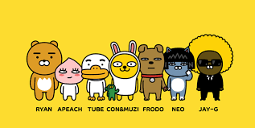
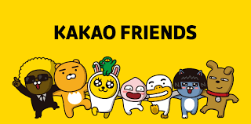
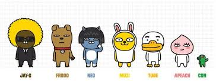
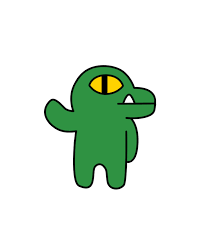

  
둥둥섬의 왕위 계승자로 태어난 수사자 라이언. 무뚝뚝한 표정과는 다르게 배려심이 많고 따뜻한 리더십을 가지고 있습니다.
| 캐릭터명 | 설명 | 이미지 |
|---|---|---|
| 무지 | 카카오톡에서 제공한 공식 설정에 따르면, '호기심 많은 장난꾸러기 무지! 토끼옷을 입고 있지만 정체는 단무지. 토끼옷을 벗으면 부끄러움을 많이 탑니다.' 라고 하지만, 아직 토끼옷을 벗은 모습을 보인 적은 없다. | |
| 라이언 | RYAN - 철자가 LION이 아니다. 'RYAN'은 영미권에서 자주 쓰이는 남자 이름으로, 디자인의 모티브인 LION과 발음이 비슷하고 한국어 표기가 같은 남성명사를 사용했다. | |
| 어피치 | 카카오톡에서 제공한 공식 설정에 따르면 "유전자변이로 자웅동주가 된 것을 알고 복숭아 나무에서 탈출한 악동 복숭아 어피치. 섹시한 뒷태로 사람들을 매혹시키지만 성격이 매우 급하고 과격합니다."라고 한다. | |
| 콘 | 무지와 같이 다니는 녹색의 작은 악어 캐릭터. 설정에서는 콘이 무지를 키운 것으로 되어있다. |  |